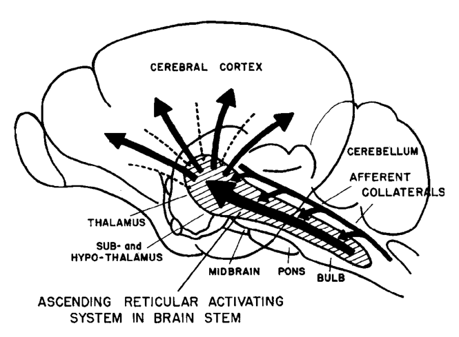
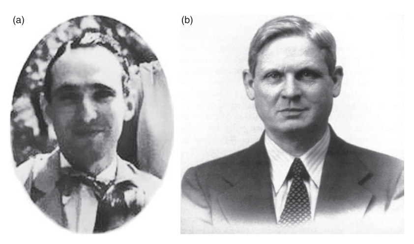

Chương 11 — Hệ thống thần kinh: Cơ sở thần kinh của hành vi
Chương 11
Hệ Thống Thần Kinh: Cơ Sở Thần Kinh Của Hành Vi
Cho đến tận sâu trong thế kỷ XX, hoạt động của não bộ vẫn được cho là bị chi phối bởi hoạt động điện trong các đường dẫn truyền thần kinh chuyên biệt. Nghiên cứu vào giữa thế kỷ lần đầu tiên đã hé lộ các hệ thống phân bố rộng rãi tham gia vào các chức năng toàn cục làm nền tảng cho hành vi. Bằng chứng đầu tiên cũng được tìm thấy cho thấy não bộ vừa là một tuyến nội tiết vừa là một máy tính. Hệ thống lưới hoạt hóa (reticular activating system) trong thân não được chứng minh là đảm nhiệm việc thức tỉnh vỏ não đi kèm với tri giác cảm giác. Chuyển động mắt nhanh được chứng minh trong giấc ngủ, dẫn đến một cách hiểu hoàn toàn mới về giấc ngủ như một trạng thái não bộ hoạt động phức tạp. Điều kiện hóa thao tác (operant conditioning) được chứng minh, giới thiệu một mô hình mới để nghiên cứu các cơ chế não bộ trong động lực và học tập. Lý thuyết hai trung tâm (two-state theory) về các cơ chế não bộ tham gia kiểm soát hành vi ăn uống được đưa ra, định hướng cho các nghiên cứu tiếp theo về hành vi ăn uống. Mối liên hệ giữa não bộ và tuyến yên—với tư cách là tuyến chủ quản kiểm soát hormone trong cơ thể—đã được giải mã, bao gồm cả sự kiểm soát thần kinh đối với thùy sau tuyến yên và hệ thống cửa kiểm soát thùy trước tuyến yên. Sự thống trị lâu dài của các thao tác phòng thí nghiệm đối với nghiên cứu hành vi cuối cùng đã bị thách thức bởi các nghiên cứu về cơ chế não bộ làm nền tảng cho hành vi và sự trỗi dậy của tập tính học (ethology) thông qua các nghiên cứu về hành vi tự nhiên.
Trái ngược với các đường dẫn truyền và mạch thần kinh trung gian cho các loại tri giác và hành vi cụ thể là các hệ thống có tác động mang tính toàn cục hơn, tham gia vào việc giải phóng và đáp ứng với các hormone lưu hành trong máu hoặc thiết lập trạng thái hành vi của sinh vật. Giữa thế kỷ cũng là thời kỳ của những tiến bộ phi thường trong việc hé lộ các hệ thống này.
Sự Thức Tỉnh và Hệ Thống Lưới Hoạt Hóa
Sherrington đã chứng minh rằng các vết cắt ngang thấp ở thân não mèo làm các cơ bị liệt và mềm nhũn, trong khi các vết cắt ngang cao, phía trên nhân đỏ, tạo ra trạng thái tăng hoạt động trương lực, gọi là “cứng mất não” (decerebrate rigidity). Những trạng thái khác nhau này đã hỗ trợ việc phân tích các đường dẫn truyền và chức năng tủy sống, như chúng ta đã thấy trong chuyên khảo kinh điển của ông The Integrative Action of the Nervous System (Hoạt Động Tích Hợp của Hệ Thần Kinh) (1906).
Vào thập niên 1930, Frederick Bremer (1937) người Bỉ hướng sự chú ý sang trạng thái của não bộ phía trên các vết cắt ngang này. Ông chứng minh rằng các vết cắt ngang thấp (“encephale isole”, hay não cô lập) không ảnh hưởng đến chu kỳ thức và ngủ bình thường, trong khi các vết cắt ngang cao (“cerveau isole”, hay đại não cô lập) tạo ra giấc ngủ sâu vĩnh viễn. Những thí nghiệm này chỉ ra vùng não giữa–cầu não là nơi chứa các cơ chế thức tỉnh.
Vào thập niên 1940, Robert Morrison và các đồng nghiệp tại Harvard thực hiện các thí nghiệm trong đó các vùng khác nhau của đồi thị được kích thích điện và quan sát tác động lên hoạt động điện của vỏ não. Kích thích các nhân chuyển tiếp cảm giác tạo ra đáp ứng giới hạn ở các vùng chiếu vỏ não, trong khi kích thích các nhân xen kẽ tạo ra sự hoạt hóa lan tỏa khắp vỏ não, tăng lên theo kích thích lặp lại tăng dần. Chúng được xác định là các nhân đồi thị không đặc hiệu, và đáp ứng của chúng được gọi là đáp ứng chiêu mộ (recruiting responses).
Mối liên kết giữa hệ thống thân não và hệ thống đồi thị được phát hiện bởi Giuseppe Moruzzi thuộc Đại học Pisa và Horace Magoun thuộc UCLA vào năm 1949 (Phụ lục 11.1). Họ nhận thấy kích thích tần số cao vào phần lõi của thân não tạo ra sự thức tỉnh ở vỏ não. Các vị trí trong thân não được phát hiện tương quan với một hệ thống tế bào khuếch tán kéo dài từ hành não đến não trung gian (diencephalon). Có vẻ như thể lưới (reticular formation) này hoạt động như một hệ thống lưới hoạt hóa (reticular activating system). Các tổn thương ở thể lưới tạo ra trạng thái ngủ sâu và chặn đứng sự thức tỉnh vốn thường được tạo ra bởi kích thích các đường dẫn truyền cảm giác thân thể đặc hiệu—những đường vốn gửi các nhánh bên tới thể lưới thân não và tới các nhân không đặc hiệu của đồi thị.
Tổng hợp tất cả những điều này lại, kích thích cảm giác vừa hoạt hóa đường dẫn truyền cảm giác đặc hiệu dẫn đến tri giác, vừa hoạt hóa đường dẫn truyền không đặc hiệu thông qua hệ thống lưới hoạt hóa để tạo ra sự thức tỉnh báo động cho vỏ não nhằm giúp tri giác có ý thức diễn ra, như được tóm tắt trong sơ đồ từ bài báo kinh điển của Starzl et al. (1951) (Hình 11.1).
Điều này đã mô tả các hiện tượng thức tỉnh, chú ý và ý thức được nghiên cứu trên phương diện toàn cục, có liên quan đến việc hiểu và xử trí lâm sàng bệnh nhân hôn mê cũng như đánh giá chết não. Vào thập niên 1990, cơ sở thần kinh của ý thức bắt đầu được coi là một chủ đề nghiên cứu nghiêm túc ở cấp độ chính vỏ não, nhờ công trình của Francis Crick, Christof Koch và những người khác. Các nghiên cứu hiện nay tập trung vào những khía cạnh cụ thể hơn của ý thức liên quan đến cử động và tri giác có ý thức.
Giấc Ngủ và Chuyển Động Mắt Nhanh
Quan điểm truyền thống về giấc ngủ, được Shakespeare diễn đạt qua lời của Macbeth, coi đó là một trạng thái nghỉ ngơi phục hồi thụ động của não bộ.
Giấc ngủ, đan lại tay áo rối bời của âu lo, Cái chết của mỗi ngày sống, bồn tắm của lao nhọc đớn đau, Thuốc xoa dịu tâm trí tổn thương, món thứ hai của tự nhiên vĩ đại, Nguồn nuôi dưỡng chính trong bữa tiệc của đời người.
(Hồi II, cảnh ii)
Do đó, nó thu hút tương đối ít sự quan tâm của các nhà sinh lý học. Một trong số ít người đó là Nathaniel Kleitman tại Chicago, người có nghiên cứu vào thập niên 1930 và 1940 đã cung cấp cơ sở sinh lý ủng hộ quan điểm truyền thống. Tuy nhiên, các thí nghiệm của một trong những nghiên cứu sinh của ông, Eugene Aserinsky, đã lật ngược quan điểm này, lần đầu tiên chỉ ra các trạng thái hoạt động luân phiên diễn ra trong não, mở đầu cho ngành nghiên cứu giấc ngủ hiện đại. Cách mà điều này diễn ra mang lại những góc nhìn sâu sắc về cách nghiên cứu sau đại học được thực hiện vào thập niên 1950, trái ngược với ngày nay, và là một nghiên cứu điển hình về mối quan hệ đôi khi căng thẳng giữa một sinh viên và người hướng dẫn của mình.
Eugene Aserinsky. Eugene Aserinsky (Hình 11.2) là một ứng viên khó có thể đóng vai trò nhà cách mạng, hay thực ra là bất kỳ vai trò nào, trong khoa học nhất mà người ta có thể tưởng tượng, như chính ông ghi lại trong một cuốn hồi ký (Aserinsky, 1995). Sinh ra tại Brooklyn năm 1921, ông lớn lên trong một gia đình cận nghèo. Ông tốt nghiệp trung học năm 16 tuổi và bắt đầu học đại học nhưng mất hứng thú. Trong 12 năm tiếp theo, ông thử nhiều công việc khác nhau, nhập ngũ một thời gian ngắn, kết hôn và có một con. Cuối cùng, vào năm 1949, với sự hỗ trợ của đạo luật G.I. Bill, ông quyết định theo đuổi sự nghiệp khoa học. Dù không có bằng đại học, ông đã thuyết phục được Đại học Chicago cho mình thi tuyển đầu vào sau đại học, làm bài xuất sắc và được nhận. (Quy trình tuyển sinh cứng nhắc có cấu trúc chặt chẽ hiện đại của chúng ta hẳn đã khiến điều này trở nên bất khả thi.)
Hầu hết giảng viên thời đó đều là các nhà sinh lý học tế bào, tham gia khởi xướng kỷ nguyên mới của nghiên cứu ở cấp độ tế bào; nhưng Aserinsky muốn làm sinh lý học cơ quan (không phải lần đầu tiên hay lần cuối cùng ông đi ngược dòng). Giảng viên duy nhất có thể hướng dẫn mảng này là Kleitman. Aserinsky lập tức cảm thấy không thoải mái khi ở gần vị giáo sư cao niên có phong thái độc đoán này và không bao giờ phát triển được mối quan hệ làm việc bình thường với ông. Kleitman từng đọc một quan sát tình cờ rằng việc chìm vào giấc ngủ ở trẻ sơ sinh có liên quan đến cử động chớp mí mắt và gợi ý Aserinsky theo đuổi vấn đề này. Về thiết bị, Aserinsky được giao một phòng thí nghiệm trống, một chiếc ghế ngả và một máy ghi trống ám khói cổ lỗ sĩ (kymograph) để ghi cơ học các cử động chớp mắt. Từ đó trở đi ông hoàn toàn tự lực: không hợp tác, không có sinh viên khác làm cùng, không có lớp học cao học, không có câu lạc bộ đọc báo khoa học, v.v.—một trải nghiệm phổ biến trong đào tạo sau đại học thời đó, như chúng ta đã lưu ý.
Trong vài tháng, ông cố gắng quan sát và định lượng các cử động chớp mắt ở trẻ sơ sinh, nhưng không có quy luật nào hiện ra. Trong tuyệt vọng, ông quyết định quan sát tất cả các cử động của mắt suốt cả đêm. Đó trở thành một dự án kiệt sức, đòi hỏi không chỉ thức trắng đêm mà còn phải phân tích dữ liệu ghi nhận vào ban ngày. Trong khi đó, ở nhà, cuộc sống vô cùng khó khăn: đứa con thứ hai chào đời, vợ ông bị trầm cảm, thường xuyên không đủ thức ăn. Đã có lúc ông suýt bỏ cuộc.
Tuy nhiên, tại phòng thí nghiệm, ông bắt đầu nhận được dấu hiệu về những giai đoạn “không cử động mắt” kéo dài 20 phút. Những kết quả ở trẻ sơ sinh này đã tiếp thêm can đảm cho ông bắt đầu các thí nghiệm trên người lớn, trong đó ông tìm được một máy ghi đa kênh điện tử cũ kỹ, với các kênh cho nhiều điện cực ghi lại cử động của mắt (điện nhãn đồ - electro-oculogram) và sóng não từ da đầu (điện não đồ, EEG). Máy ghi đa kênh kém tin cậy đến mức trong một thời gian dài người ta không rõ liệu độ lệch của các ngòi bút trong các buổi đo xuyên đêm là do tín hiệu thực sự từ mắt và da đầu, do nhiễu điện từ máy hoặc điện cực, hay do nhiễu cử động của cơ thể. Khi những vấn đề đó được giải quyết, bằng chứng bắt đầu lộ diện cho thấy mắt đang trải qua các giai đoạn cử động giống như giật nhãn cầu (saccadic-like), mà giật nhãn cầu là cách mắt chúng ta nhảy cóc khi dõi theo một vật thể đang chuyển động lướt qua.
Aserinsky biết về lịch sử lâu đời của việc người ta liên kết cử động cơ thể và mắt trong lúc ngủ với việc nằm mơ (như thể người ngủ đang xem một bộ phim nội tâm hoặc diễn lại nó) và bắt đầu đánh thức các đối tượng thí nghiệm khi họ đang có các đợt cử động mắt để hỏi xem họ có đang mơ không. Ông bắt đầu xác định được các “giai đoạn chuyển động mắt nhanh” (rapid eye movement periods) cụ thể kéo dài khoảng 20 phút, gắn liền với trạng thái mơ. Ông báo cáo tiến triển của mình cho Kleitman, người khuyến khích ông phải chắc chắn loại bỏ mọi khả năng nhiễu trong các bản ghi. Kleitman cũng phân công một sinh viên y khoa, William Dement, giúp ông trong các thí nghiệm xuyên đêm và cung cấp cho họ một máy quay phim để ghi lại các buổi ngủ. Bức tranh dần thành hình với một giai đoạn đầu chìm vào giấc ngủ, tiếp theo là các giai đoạn “chuyển động mắt nhanh” xen kẽ với các giai đoạn “không chuyển động mắt”.
Vào mùa xuân năm 1953, Aserinsky và Kleitman báo cáo ngắn gọn phát hiện của họ tại hội nghị thường niên của các nhà sinh học ở Atlantic City. Một báo cáo ngắn được công bố trên tạp chí Science vào ngày 4 tháng 9 năm đó: “Regularly Occurring Periods of Eye Motility, and Concomitant Phenomena, During Sleep” (Các Giai Đoạn Cử Động Mắt Xuất Hiện Đều Đặn và Các Hiện Tượng Đi Kèm Trong Giấc Ngủ) (Aserinsky và Kleitman, 1953; Phụ lục 11.2). Họ lần đầu tiên ghi nhận các cử động mắt trong khi ngủ là “nhanh, giật cục và đối xứng hai mắt (273)”. Họ đối chiếu thống kê các cử động này với giấc mơ: “khả năng nhớ lại giấc mơ có liên quan đáng kể với sự hiện diện của các cử động mắt (274)”. Họ còn đối chiếu các giai đoạn này với sự gia tăng nhịp thở, nhịp tim cũng như các cử động cơ thể. Họ kết luận (274):
Thực tế là các cử động mắt, mô hình EEG và hoạt động của hệ thần kinh tự chủ có mối liên hệ đáng kể với nhau và không xảy ra ngẫu nhiên cho thấy rằng các hiện tượng sinh lý này, và có lẽ cả việc nằm mơ, rất có thể đều là biểu hiện của một mức độ hoạt động vỏ não cụ thể vốn thường gặp trong giấc ngủ. Một giai đoạn cử động mắt xuất hiện lần đầu khoảng 3 giờ sau khi đi ngủ, tái diễn 2 giờ sau đó, và rồi xuất hiện ở các khoảng thời gian gần nhau hơn vào lần thứ ba hoặc thứ tư ngay trước khi thức dậy. Phương pháp này cung cấp phương tiện để xác định tần suất và thời lượng của các giai đoạn nằm mơ.
Một bài báo đầy đủ trên tạp chí Journal of Applied Physiology năm 1955 của Aserinsky và Kleitman, có nhan đề “Two Types of Ocular Motility Occurring in Sleep” (Hai Loại Cử Động Mắt Xảy Ra Trong Giấc Ngủ), đã cung cấp tài liệu đầy đủ hơn về các mô hình này (Hình 11.3, Phụ lục 11.3). Trong đoạn mở đầu, các tác giả xây dựng cơ sở giải phẫu và sinh lý học cho sự hiện diện của cử động mắt trong khi ngủ:
Người ta có lý do để nghi ngờ rằng hoạt động của hệ cơ ngoài nhãn cầu và mí mắt có thể là những chỉ dấu đặc biệt nhạy cảm về các thay đổi của hệ thần kinh trung ương (CNS) gắn liền với chu kỳ ngủ–thức. Các vùng vỏ não lớn bất cân xứng tham gia vào cử động mắt, các đường tiền đình thứ cấp được xác định rõ tới các nhân vận nhãn ngoài, và tỷ lệ phân bố thần kinh thấp của các cơ mắt ít nhất cũng chỉ ra một cơ sở định lượng cho sự phản ánh hoạt động chung của CNS. Một mối liên hệ cụ thể hơn giữa cử động mắt và các dao động trong chu kỳ ngủ–thức được gợi ý bởi vị trí giải phẫu gần kề của các nhân vận nhãn với một đường dẫn truyền tham gia duy trì trạng thái thức [tài liệu tham khảo ở đây là một sách giáo khoa giải phẫu] và bởi sự kỳ lạ là cơ vòng mắt co lại trong khi ngủ trong khi các cơ xương khác lại thư giãn (tr. 1) . . .
Các tác giả kết luận rằng họ đã mô tả “Một loại hoạt động mắt mới gọi là ‘chuyển động mắt nhanh’ trong khi ngủ”, gắn liền với sự gia tăng 10% nhịp tim, tăng 20% nhịp hô hấp, mô hình EEG điện thế thấp ở vùng trán và chẩm của não (một mô hình giống với lúc thức), tăng hoạt động của hệ cơ toàn thân bao gồm cả cơ mặt, và đôi khi phát ra âm thanh. “Qua việc hỏi đối tượng và từ các dấu hiệu khác, người ta tin rằng các chuyển động mắt nhanh có liên quan đến hình ảnh thị giác đi kèm với việc nằm mơ.”
Trong bài báo này, thuật ngữ “chuyển động mắt nhanh” (rapid eye movements) lần đầu tiên được sử dụng thường xuyên để mô tả các cử động mắt giật cục giống như giật nhãn cầu. Từ viết tắt giấc ngủ “REM” sớm xuất hiện theo sau trong y văn, cũng như các thuật ngữ khác như “giấc ngủ mơ” (dream sleep) và “giấc ngủ nghịch thường” (paradoxical sleep) (sự nghịch thường nằm ở chỗ sự thức tỉnh tăng cao lại xảy ra trong trạng thái đang ngủ). Dement và Kleitman (1957a, 1957b) chẳng bao lâu sau đã đối chiếu chính xác hơn các giai đoạn kế tiếp của giấc ngủ sâu và giấc ngủ REM với những thay đổi đặc trưng trên EEG, điều trở thành một công cụ giá trị trong nghiên cứu giấc ngủ, với việc Dement trở thành một chuyên gia hàng đầu.
Đến lúc đó, Aserinsky đã rời bỏ nghiên cứu giấc ngủ. Vì cần việc làm, ông rời đi ngay sau khi nhận bằng năm 1953 và tìm được một vị trí giảng viên tại Trường Y Jefferson. Sau này vào thập niên 1960, ông quay lại lĩnh vực mà mình đã khai sinh, nghiên cứu về sự khác biệt sinh lý giữa giấc ngủ REM và non-REM; nhưng giới nghiên cứu đã quên mất ông. Ông đã quay lưng lại với lĩnh vực này và không duy trì liên lạc với những người làm nghiên cứu giấc ngủ. Hệ quả là, “xa mặt cách lòng”. Kleitman, Dement và những người khác được công nhận là những người tiên phong của nghiên cứu giấc ngủ, một thực tế mà Aserinsky vô cùng cay đắng. Chỉ đến thập niên 1990, sự hòa giải và công nhận mới đến, ngay trước khi ông qua đời vì một tai nạn giao thông.
Tóm lại, các nghiên cứu sau đại học của Aserinsky, được thực hiện phần lớn một cách đơn độc, đã thay đổi tận gốc rễ hiểu biết của chúng ta về giấc ngủ, từ một sự nghỉ ngơi và phục hồi thụ động của não bộ thành một sự luân phiên của các vùng và mạch não tương tác tích cực. Trớ trêu thay, về phần mình, Kleitman chưa bao giờ từ bỏ quan điểm kiểu Shakespeare, tiếp tục coi giấc ngủ REM đơn giản là một giai đoạn phục hồi được biến đổi trong giấc ngủ bình thường. “Kleitman qua đời vẫn tin rằng chỉ có một trạng thái ngủ duy nhất,” Dement nói với một người phỏng vấn (Brown, 2003, 97). Nhưng đối với hầu hết các nhà khoa học não bộ và bác sĩ thần kinh, đó là sự mở ra của một thế giới mới. Trong thập niên 1960 và 1970, Michel Jouvet ở Pháp đã mô tả đặc điểm các vùng não khác nhau và các chất dẫn truyền thần kinh của chúng tham gia vào giấc ngủ. Tiếp theo đó là việc xác định các mạch não luân phiên hỗ trợ các giai đoạn khác nhau của giấc ngủ bởi Alan Hobson, John McCarley và những người khác.
Tại hội nghị năm 1995 của Hiệp hội Các Chuyên gia Giấc ngủ Liên kết, 2000 nhà nghiên cứu giấc ngủ đã có mặt dưới khán phòng khi Aserinsky, Kleitman và Dement cùng nhau lên nhận vinh danh. Và tại hội nghị của chính các hiệp hội đó năm 2003, nhân dịp kỷ niệm năm mươi năm ngày phát hiện, lượng khán giả đã tăng lên gần 5000 người và Dement đã viện dẫn Diễn văn Gettysburg của Lincoln để đánh dấu sự kiện một cách nửa đùa nửa thật (Brown, 2003, 97): “Hai mươi năm và mười năm trước, Aserinsky và Kleitman đã khai sinh trên lục địa này một ngành học mới được thai nghén vào ban đêm và hiến dâng cho mệnh đề rằng giấc ngủ bình đẳng với sự thức tỉnh.” Khán giả đã nhiệt liệt tán thành.
Điều Hòa Thao Tác Bằng Tự Kích Thích Não
Trong đầu thế kỷ XX, điều kiện hóa thao tác (operant conditioning) nổi lên như hình thức phân tích hành vi thống trị, điển hình là hộp Skinner, trong đó một con vật khát nước nhấn cần gạt để học một hành vi và nhận phần thưởng là chất lỏng. Một hướng tiếp cận mới đối với việc học tập đã được giới thiệu bởi một nghiên cứu sinh khác, làm việc cùng thời với Aserinsky nhưng ở một quốc gia khác, Canada, và trong những hoàn cảnh đồng nghiệp thân thiện hơn.
Đó là James Olds, làm luận án tốt nghiệp với Peter Milner tại phòng thí nghiệm của Donald Hebb ở Đại học McGill, Montreal. Trong bài báo kinh điển của họ (Olds và Milner, 1954; Phụ lục 11.4), họ để con vật nhấn một cần gạt để truyền kích thích điện vào các phần khác nhau ở lõi não. Với các kích thích ở một số vùng nhất định, chuột sẽ nhấn thanh gạt lặp đi lặp lại rất nhiều lần, có lẽ cho thấy các cú sốc điện đang đóng vai trò như phần thưởng, nói cách khác là có tính “củng cố” (reinforcing), theo cách tương đương với các thí nghiệm điều kiện hóa cổ điển. Các đường cong tiếp thu và dập tắt hành vi sánh ngang với những đường cong tạo ra bởi điều kiện hóa thao tác thông thường. Bằng cách lập bản đồ các cấu trúc não trung tâm, Olds và Milner nhận thấy sự củng cố cao nhất ở các vùng đáy trung tâm của não trước, tương ứng đại khái với bó não trước giữa (medial forebrain bundle), nhạy cảm nhất ở vùng vách (septal area) nhưng kéo dài lên tới hồi đai (cingulate gyrus) của vỏ não. Phương pháp này được gọi là điều kiện hóa thao tác bằng tự kích thích não (brain self-stimulation).
Phát hiện của Olds và Milner được mô tả là “một trong những khám phá khoa học hiếm hoi mở ra một lĩnh vực mới” (Rosenzweig et al., 1996, 540). Chúng ta đang thấy rằng thập niên 1950 đầy rẫy những sự kiện hiếm hoi như vậy. Tác dụng tưởng thưởng của việc tự kích thích não đã được chứng minh ở nhiều loài khác nhau, bao gồm cả con người, những người báo cáo cảm giác khoái lạc, ấm áp và thậm chí hưng phấn tình dục (Breedlove et al., 1996, 540). Đã có suy đoán rằng tự kích thích não xác định các “mạch phần thưởng” chuyên biệt sử dụng dopamine làm chất dẫn truyền, nhưng bằng chứng vẫn còn gây tranh cãi (Rosenzweig et al., 1996, 541).
Vùng Hạ Đồi và Hành Vi Ăn Uống
Các khái niệm cổ điển về cơ chế thần kinh tham gia vào việc ăn uống bắt nguồn từ các nghiên cứu trong đó tổn thương được tạo ra ở các vùng khác nhau của vùng hạ đồi (hypothalamus).
Giả Thuyết “Trung Tâm Kép” Về Ăn Uống. Đầu tiên người ta phát hiện rằng các tổn thương ở vùng hạ đồi bụng giữa (VMH) tạo ra một con vật ăn quá mức và trở nên béo phì (Hetherington và Ranson, 1940). Điều này ban đầu được chứng minh ở chuột cống và sau đó ở nhiều loài. Do đó người ta kết luận rằng VMH là một “trung tâm no” (satiety center) vốn thường được hoạt hóa khi ăn đến mức no, làm ngừng việc ăn. Các nghiên cứu sâu hơn của John Brobeck tại Đại học Pennsylvania phát hiện rằng các tổn thương ở vùng hạ đồi bên (LH) khiến động vật ngừng ăn (Anand và Brobeck, 1951a, 1951b). Điều này gợi ý rằng LH là một “trung tâm đói/ăn” (feeding center). Hai phát hiện này được Eliot Stellar tại Penn ghép lại thành giả thuyết trung tâm kép về ăn uống, trong đó việc ăn uống là do hoạt động của LH, vốn ngày càng bị ức chế bởi hoạt động của VMH khi việc ăn đạt đến mức no (Stellar, 1957) (Phụ lục 11.5).
Chẳng bao lâu người ta nhận ra rằng các trung tâm này không dễ định nghĩa rạch ròi mà thay vào đó bao gồm các tế bào tập trung ở vùng hạ đồi nhưng lan tỏa rộng rãi trong não. Các sợi của bó não trước giữa chạy xuyên qua những vùng này, làm nhiễu loạn các nỗ lực định vị các chức năng cụ thể. Các cơ chế khác cũng nổi lên, chẳng hạn như sự kiểm soát riêng lẻ đối với carbohydrate, chất béo và amino acid. Tuy nhiên, đói và no định hình nên trục của hành vi ăn uống, và giả thuyết trung tâm kép ở một mức độ lớn đã định nghĩa bài toán kiểm soát ăn uống và kích thích phần lớn các nghiên cứu trong lĩnh vực này suốt 50 năm qua.
Kiểm Soát Ăn Uống: Jacques Le Magnen. Nhà tiên phong về phân tích hành vi ăn uống này sinh năm 1916 tại Pháp. Năm 1929, ở tuổi 12, ông mắc bệnh viêm não trong một đại dịch toàn cầu và mất thị lực ở cả hai mắt. Trong nhiều năm ông được học tại nhà và phát triển một trí nhớ phi thường. Cuối cùng nhận bằng tú tài năm 1944 tại Paris thời chiến, ông được Henri Piéron, giám đốc Phòng thí nghiệm Sinh lý học Cảm giác tại Collège de France, nhận vào làm việc, nơi ông bắt đầu các nghiên cứu về khứu giác ở người. Vào thời điểm đó “đó là một lĩnh vực hầu như không có dữ liệu và quy trình thực nghiệm, chủ yếu chỉ có vài lý thuyết” (Le Magnen, 2001, 376). Le Magnen đã phát triển các máy đo mùi (olfactometer) để đo độ bay hơi, nồng độ và tốc độ hít vào của một kích thích khứu giác và áp dụng chúng để nghiên cứu sự khác biệt về độ nhạy mùi giữa hai giới. Khoảng năm 1950, ông chuyển sang cơ sở mới tại Collège de France và bắt đầu nghiên cứu ảnh hưởng của khứu giác đến hành vi ăn uống ở chuột cống, với các thí nghiệm do các trợ lý kỹ thuật thực hiện. Theo Bellisle, Laffort và Köster (2003, 85):
Bắt đầu từ năm 1950, Jacques Le Magnen đã đưa ra một loạt các khái niệm mang tính cách mạng. Những ý tưởng của ông đã truyền cảm hứng và vẫn đang truyền cảm hứng cho nhiều thế hệ các nhà khoa học. Ông là người đầu tiên phát triển các thiết bị cho phép ghi nhận lượng thức ăn và nước uống ở chuột cống suốt cả 24 giờ trong ngày, và chỉ ra cách hành vi cùng các yếu tố quyết định nó thay đổi dưới ảnh hưởng của chu kỳ ngày đêm (circadian cycles). Trong pha hoạt động (ban đêm ở chuột cống), việc nạp vào cho phép tích lũy dự trữ cơ thể để sử dụng trong pha nghỉ ngơi, khi mức tiêu thụ giảm xuống tối thiểu. Sự luân phiên ngày/đêm này là một trong những nền tảng của điều hòa năng lượng và nước–khoáng. Trong giai đoạn hoạt động hàng ngày, các bữa ăn xen kẽ với việc nhịn ăn nhằm đáp ứng các tín hiệu chuyển hóa được tạo ra bởi việc tiếp nhận thức ăn và thành phần dự trữ cơ thể. Trong tất cả những điều này, vai trò của các đặc tính cảm giác của thức ăn, tất nhiên là khứu giác, nhưng cũng cả vị giác và thị giác, không hề bị lãng quên. Trong cái mà ông gọi là “học tập tính ngon miệng” (learning of palatability), Jacques Le Magnen đã chỉ ra cách các đặc tính cảm giác của thức ăn tự chuyển hóa thành một kích thích có điều kiện phức tạp dẫn dắt hành vi, cho phép hình thành sở thích và sự chán ghét thức ăn, và quyết định kích thước của một bữa ăn tùy thuộc vào hậu quả chuyển hóa dự kiến của việc ăn vào. Hơn nữa, phòng thí nghiệm của ông xác nhận rằng chính các yếu tố cảm giác và chuyển hóa tương tự đó cũng vận hành ở con người.
Thức ăn như một “kích thích có điều kiện phức tạp” có nghĩa là lượng ăn vào là kết quả của sự cân bằng giữa các yếu tố gây đói và gây no trong các phẩm chất cảm giác của thức ăn: Ông nhận thấy rằng việc loại bỏ một mùi trong thức ăn mà con vật đã được điều kiện hóa sẽ lập tức làm tăng lượng ăn vào (mùi trở thành một yếu tố gây no), cũng như việc thay đổi mùi của thức ăn (có tác dụng kích thích sự thèm ăn). Lượng thức ăn nạp vào do đó được kiểm soát một cách linh hoạt bởi hương vị thức ăn, một thực tế không hề bị các ngành công nghiệp thực phẩm và hương liệu bỏ qua trong nỗ lực tối đa hóa mức tiêu thụ thực phẩm. Các khái niệm tiên phong của Le Magnen trở nên nổi tiếng hơn trên toàn thế giới sau khi ông bắt đầu thu hút các nghiên cứu sinh vào thập niên 1960 (bao gồm Paul Laffort, Stylianos Nikolaidis và Patrick MacLeod) và từ thập niên 1970 công bố bằng tiếng Anh.
Tôi đã được trải nghiệm trí nhớ phi thường của Le Magnen tại hội nghị Hiệp hội Quốc tế về Khứu giác và Vị giác ở Paris năm 1977. Mặc dù tôi đến thăm mà không báo trước, ông lập tức nhận ra tôi và thảo luận về một số công trình của tôi, chắc chắn có sự trợ giúp từ 30.000 thẻ chữ nổi Braille mà ông được cho là đã tập hợp từ tài liệu khoa học. Ngoài trí nhớ, tài sản lớn khác của ông là người vợ Régine, người luôn sát cánh bên ông.
Tế Bào Tiết Thần Kinh: Não Bộ Như Một Tuyến Nội Tiết
Năm 1928, Ernst Scharrer báo cáo (xem Scharrer, 1987) rằng trong vùng hạ đồi của một loài cá xương thật có những tế bào thần kinh giống tế bào tuyến ở chỗ chứa một lượng lớn vật chất tương tự như của các tế bào chế tiết đã biết, chẳng hạn như tế bào beta sản xuất insulin của tuyến tụy. Scharrer gọi chúng là các tế bào tiết thần kinh (neurosecretory cells) và gợi ý rằng chúng hoạt động như các tế bào nội tiết bên trong hệ thần kinh và chất tiết của chúng có thể liên quan đến tuyến yên gần đó.
Vào thời điểm đó, các ý tưởng về hoạt động thần kinh hoàn toàn chỉ xoay quanh hoạt động điện. Như Berta Scharrer (1987, 2) nhớ lại (Phụ lục 11.6),
. . . ban đầu ý tưởng cho rằng neuron có khả năng phát đi các tín hiệu hormone thần kinh, tức là qua đường máu, một hoạt động trước đó chỉ được gán cho các tế bào nội tiết thực thụ, đã vấp phải sự phản kháng mạnh mẽ. Nó không phù hợp với các giáo điều của học thuyết neuron, và việc nó được đề xuất trên cơ sở bằng chứng tế bào học bị coi là phi lý.
Các nghiên cứu so sánh cho thấy các nhóm tế bào tiết thần kinh hiện diện trong hệ thần kinh của cả động vật không xương sống và động vật có xương sống, bao gồm cả con người. Sự tương đồng giữa hệ thống hạ đồi–tuyến yên của động vật có xương sống và hệ thống não–thể tim–thể tơ (brain–corpus cardiacum–corpus allatum) của côn trùng đã được nhận ra (Scharrer và Scharrer, 1944), chỉ ra sự hiện diện ở cả động vật không xương sống và có xương sống của các tuyến chủ quản điều phối sự kiểm soát của não bộ đối với nhiều loại hormone. Với sự ra đời của kính hiển vi điện tử, người ta có thể quan sát rõ ràng các hạt chế tiết lớn đậm đặc điện tử trong các tế bào chế tiết và sự tương đồng của chúng với các hạt trong tế bào tuyến của cơ thể, cũng như hiểu được cách thức trong cả hai trường hợp các hạt này (túi lõi đặc - dense-core vesicles) phát sinh từ bộ máy Golgi (Scharrer và Brown, 1961).
Kể từ đó, đã có sự tiến hóa trong khái niệm về hệ thần kinh, từ chỗ bị chi phối gần như hoàn toàn bởi hoạt động điện sang quan điểm coi não bộ chứa các tế bào có đầy đủ đặc tính của tế bào chế tiết bên cạnh hoạt động điện của chúng. Ngày nay, chúng ta ngày càng nhận ra rằng não bộ vừa là một tuyến nội tiết vừa là một máy tính.
Hệ Thống Hạ Đồi–Thần Kinh Tuyến Yên
Mặc dù theo khái niệm mới này mọi tế bào thần kinh đều có tính chế tiết cũng như tính điện, tuyến yên vẫn được công nhận là tuyến chủ quản và chịu sự kiểm soát của hoạt động tại một vùng sâu của não nằm ngay phía trên nó gọi là “vùng hạ đồi”. Từ lâu người ta đã biết rằng thể tuyến yên có hai phần, phần trước có vẻ là tuyến và phần sau có vẻ là phần kéo dài từ các tế bào ở vùng hạ đồi. Lời giải cho cách thức kiểm soát đối với các phần này của thể tuyến yên là một trong những câu chuyện trinh thám khoa học vĩ đại của thập niên 1950.
Mối liên hệ giữa vùng hạ đồi và tuyến yên nằm bên dưới có một lịch sử lâu dài và phức tạp. Bó sợi thần kinh xuất phát từ các tế bào của vùng hạ đồi và kết nối qua cuống tuyến yên tới thùy sau tuyến yên đã được Ramón y Cajal (1894) mô tả, người gợi ý rằng các sợi này mang tín hiệu cảm giác từ thùy sau tuyến yên lên vùng hạ đồi. Tuy nhiên, bản chất hormone của thùy sau tuyến yên nhanh chóng thu hút sự chú ý vì vào khoảng cùng thời gian đó người ta chứng minh rằng dịch chiết thùy sau tuyến yên làm tăng trương lực mạch máu và huyết áp (Oliver và Schafer, 1895). Hoạt chất trong dịch chiết như vậy về sau được gọi là “hormone”, bắt nguồn từ tiếng Hy Lạp nghĩa là “khuấy động hoạt động, thúc đẩy”. Thuật ngữ này được W. B. Hardy đề xuất “và mặc dù đặc tính của một chất truyền tin không được hàm ý bởi thuật ngữ này, cuối cùng nó vẫn được chấp nhận” (Harris, 1955, 1),
Việc xác định các hormone thùy sau tuyến yên trở thành một phần của lĩnh vực nội tiết học mới mẻ, chuyên xác định các hormone được tiết ra bởi các tuyến khác nhau và tác động của chúng lên các mô và cơ quan đích. Trong phần đầu thế kỷ XX, những nghiên cứu này được thực hiện song song với các nghiên cứu về chất dẫn truyền thần kinh trong hệ thần kinh tự chủ (xem Chương 4). Trong cả hai trường hợp, phương pháp đều bị giới hạn ở cấp độ cơ quan, hoặc làm dịch chiết của tuyến để kiểm tra tác dụng dương tính của nó, hoặc, đặc biệt trong nội tiết học, cắt bỏ tuyến để kiểm tra tác động khi vắng mặt nó.
Một loạt nghiên cứu cho thấy nhiều tác dụng của dịch chiết thùy sau tuyến yên, đòi hỏi nửa đầu thế kỷ XX để phân loại rõ ràng. Kamm (1928) đã tinh chế dịch chiết thô và xác định hai phân đoạn chính, mỗi phân đoạn có nhiều tác dụng, làm rõ thuật ngữ cho chúng. Một phân đoạn có tác dụng chống bài niệu ở cả hai giới, đi kèm với sự tăng trương lực mạch máu như đã lưu ý ban đầu. Nguyên lý hoạt động của dịch chiết này được gọi là hormone chống bài niệu (antidiuretic hormone - ADH).
Loại tác dụng kia xảy ra ở giống cái và liên quan đến hành vi sinh sản. Điều này bao gồm tăng nhu động tử cung trong lúc giao hợp (liên quan đến việc vận chuyển tinh trùng tới buồng trứng), thúc đẩy co bóp tử cung trong quá trình sinh nở và gây co các tế bào cơ biểu mô của tuyến vú để tạo ra phản xạ tiết sữa đáp ứng với kích thích cảm giác ở núm vú. Hormone này được đặt tên là oxytocin (“sinh nhanh”). Các dịch chiết thô lần đầu tiên được điều chế bởi Dale (1909) và Ott và Scott (1910). Trong nhiều năm, rất khó để tách biệt tác dụng của ADH khỏi oxytocin. Liệu chúng là do một hormone hay nhiều hormone gây ra?
Phải đến khi có các phương pháp hóa sinh mới vào khoảng năm 1950, Lawler và Du Vigneaud (1953) mới chứng minh được sự phân cắt bằng enzyme của glycinamide từ vasopressin để tạo ra ADH và chỉ ra rằng cấu trúc của nó gồm một peptide tám amino acid. Oxytocin cũng được tổng hợp bởi Popenoe và Du Vigneaud (1953), và được chứng minh có tác dụng như dự kiến lên tử cung chuột cống, tử cung người và tuyến vú người. Cấu trúc của nó khác với cấu trúc của ADH ở hai amino acid. Việc xác định hai hormone peptide hạ đồi–tuyến yên này là một kỳ công xuất sắc, theo sát ngay sau sự tổng hợp chuỗi polypeptide dài hơn là insulin của Sanger và Tuppy (1951) (xem Chương 4), và cả hai đều đi trước sự tổng hợp yếu tố tăng trưởng thần kinh của Stanley Cohen năm 1960 (Chương 3).
Làm thế nào các hormone này đi đến thùy sau tuyến yên cũng là một vấn đề gây tranh cãi. Bargmann (1951), sử dụng phương pháp nhuộm Gomori đánh dấu các sản phẩm tiết thần kinh, đã truy vết được các sợi xuất phát từ các tế bào tiết thần kinh của nhân trước thị và nhân cạnh não thất ở vùng hạ đồi sau đi qua bó sợi tới thùy sau tuyến yên. Từ thời điểm đó, người ta hiểu rằng các tế bào vùng hạ đồi tổng hợp hormone trong thân tế bào của chúng và vận chuyển chúng dọc theo sợi trục trong cuống tuyến yên để tiết ra từ các đầu tận cùng sợi trục ở thùy sau tuyến yên vào dòng máu. Ngay cả khi đó, người ta vẫn cần xác lập rằng bản thân các hormone tách biệt với chất được hiển thị bằng thuốc nhuộm Gomori. Các thí nghiệm song song cho thấy những nguyên lý tương tự áp dụng cho sự tiết thần kinh ở côn trùng (Scharrer, 1952).
Bằng chứng sinh lý học thần kinh cho các đặc tính chức năng của tế bào thùy sau tuyến yên bắt đầu từ nghiên cứu của Eric Kandel. Sau nghiên cứu tiên phong về tế bào tháp hồi hải mã cùng Alden Spencer (Spencer và Kandel, 1961), khi đang là bác sĩ nội trú tâm thần học tại Harvard, ông đã thực hiện một nghiên cứu về các tế bào thùy sau tuyến yên ở cá. Đây là những bản ghi đầu tiên cho thấy các tế bào này tạo ra điện thế hoạt động, lan truyền qua sợi trục để dẫn đến sự giải phóng các hormone peptide của chúng theo cách tương tự như sự giải phóng chất dẫn truyền thần kinh (Kandel, 1964). Ông mô tả trong hồi ký (Kandel, 2006) rằng mặc dù phát hiện này mới mẻ, nó sẽ không dẫn tới hiểu biết sâu sắc về cơ chế tế bào của trí nhớ, nên ông đã lên đường sang phòng thí nghiệm của Tauc ở Pháp để ghi nhận từ các neuron của sên biển Aplysia (Chương 7).
Hệ Thống Cửa Hạ Đồi–Tuyến Yên Trước
Phần trước của tuyến yên đặt ra một câu đố còn lớn hơn vì nó không có kết nối thần kinh trực tiếp với vùng hạ đồi nằm phía trên. Nhiều thí nghiệm liên quan đến cắt bỏ và ghép tuyến vào các vị trí khác nhau đã được thực hiện trong nửa đầu thế kỷ XX để xác định chức năng của nó. Từ đây xuất hiện danh hiệu tuyến yên là tuyến chủ quản kiểm soát nhiều chức năng cơ thể. Chúng bao gồm sự tăng trưởng của tế bào cơ thể, cân bằng muối thông qua điều hòa vỏ thượng thận, năng lượng và tăng trưởng thông qua điều hòa chức năng tuyến giáp, quá trình sinh tinh và nồng độ testosterone thông qua điều hòa tinh hoàn, và chu kỳ kinh nguyệt cùng thai kỳ thông qua điều hòa buồng trứng. Công trình này thuộc về lĩnh vực nội tiết học nhiều hơn. Ở đây, chúng ta tập trung vào các nghiên cứu liên quan đến việc xác định cơ chế mà não bộ kiểm soát tuyến này.
Phải đến năm 1940, David Rioch và các cộng sự mới đưa ra danh pháp chuẩn cho các phần riêng biệt của tuyến yên. Nói một cách đơn giản, cuống tuyến yên nhô ra từ vùng hạ đồi, tạo nên các tế bào tiết hormone của thùy trước tuyến yên (adenohypophysis) nằm ở phần xa (pars distalis) và các đầu tận cùng tiết hormone của thùy sau tuyến yên (neurohypophysis) ở mỏm phễu (infundibular process).
Các mạch máu trên cuống tuyến yên được Fr. I. Rainer tìm thấy tại Bucharest (Harris, 1955, 20). Học trò của ông là G. T. Popa đã mô tả các mạch máu này và điểm mấu chốt là chúng tận cùng thành các mao mạch ở cả vùng hạ đồi và thùy trước tuyến yên (Popa, 1930;). Máu chảy theo chiều nào trong các mạch này? Họ gợi ý rằng máu chảy từ tuyến yên lên vùng hạ đồi. Ngược lại, George Wislocki của Harvard gợi ý rằng máu chảy từ vùng hạ đồi xuống tuyến yên, tận cùng ở thùy trước tuyến yên (Wislocki và King, 1936). Geoffrey Harris ở Oxford sau đó đã thực hiện một loạt nghiên cứu cung cấp bằng chứng dứt khoát cho chiều dòng chảy này. Điều này bao gồm việc quan sát trực tiếp dưới kính hiển vi dòng máu chảy trong các mạch ở động vật được gây mê (Green và Harris, 1949). Điều này đã xác lập khái niệm hệ thống cửa hạ đồi–tuyến yên (hypothalamic–hypophyseal portal system) mà qua đó vùng hạ đồi có thể điều hòa chức năng thùy trước tuyến yên. Những nghiên cứu này được tóm tắt trong chuyên khảo kinh điển của Harris Neural Control of the Pituitary Gland (Sự Kiểm Soát Thần Kinh Đối Với Tuyến Yên) (1955) (Hình 11.4, Phụ lục 11.7).
Harris gợi ý rằng các neuron ở vùng hạ đồi giải phóng các yếu tố vào hệ thống mạch máu cục bộ này để “điều hòa tốc độ tiết hormone thùy trước tuyến yên” và đặt câu hỏi: “liệu có bấy nhiêu cơ chế thể dịch tham gia tương ứng với bấy nhiêu loại hormone không?” (Harris 1955, 177). Như vậy, chỉ trong một nét vẽ, các hệ thống vĩ đại đã được hợp nhất: hệ thần kinh, hệ thần kinh nội tiết và hệ nội tiết.
Với công trình này, Harris được coi là “cha đẻ” của ngành nội tiết học thần kinh; chúng ta đã thấy rằng vợ chồng Scharrer cũng có quyền được coi là đồng sáng lập. Như Charles Sawyer (1975, 97) nhận xét:
“Harris không phải là người đầu tiên gợi ý rằng thùy trước tuyến yên có thể được kiểm soát bởi một cơ chế thể dịch liên quan đến hệ thống cửa tuyến yên, nhưng chính sức mạnh trí tuệ, nhân cách và cách tiếp cận nghiên cứu đa diện của ông đối với vấn đề vào cuối thập niên 1940 và đầu thập niên 1950 đã thực sự xác lập khái niệm thần kinh–mạch máu.”
Cũng khi gợi ý rằng hormone là yếu tố được tiết ra, Harris nhận ra rằng nó được tạo ra bởi một tiền chất và cần có một thuật ngữ đại diện cho tiền chất đó để mô tả sự hình thành của hormone và bản thân hormone được tiết ra. Đến năm 1973, các peptide gồm hormone giải phóng hormone tạo hoàng thể (LHRH), hormone giải phóng thyrotropin (TRH) và somatostatin đã được xác định là các cơ chế thể dịch mà Harris đã giả định. Các công trình tiếp theo đã xác định tất cả các yếu tố kiểm soát thùy trước tuyến yên và mô tả đặc điểm các con đường thể dịch và thần kinh trung ương kiểm soát sự giải phóng của chúng.
Đặt Nền Móng Cho Giải Phẫu Thần Kinh Hiện Đại
Trong khi những cuộc khảo sát về các cấu trúc sâu và chức năng của não bộ đang diễn ra, một cuộc cách mạng thầm lặng khác cũng bắt đầu dưới hình thức nỗ lực của một nhà nghiên cứu trẻ làm việc gần như cô độc nhằm phát triển một phương pháp tốt hơn để truy vết các đường dẫn truyền sợi ở những vùng này.
Walle J. H. Nauta. Walle J. H. Nauta (Hình 11.5) sinh năm 1916 trong một gia đình truyền giáo và hoạt động cộng đồng người Hà Lan bên eo biển Malacca ở Sumatra, Indonesia (Jones, 2006). Ông theo học tại Đại học Leiden, hoàn thành chương trình tiền lâm sàng năm 1937. Khi làm trợ lý sinh viên ở khoa giải phẫu, ông trở nên hứng thú với giải phẫu não bộ và thấy vùng hạ đồi đặc biệt lôi cuốn. Mô tả của ông (Nauta, 1993, 1337) về cách mối quan tâm này dẫn đến sự nghiệp cả đời của mình đan xen với nhiều câu chuyện khác trong bản tường thuật của chúng ta về thời kỳ đó:
Các ấn phẩm đầu tiên của vợ chồng Scharrer vừa mới ra mắt, báo cáo quan sát đáng kinh ngạc của họ rằng các tế bào của nhân đại bào vùng hạ đồi kết hợp đặc tính thần kinh với đặc tính chế tiết [xem phần trước, “Tế Bào Tiết Thần Kinh: Não Bộ Như Một Tuyến Nội Tiết”, về các nghiên cứu của vợ chồng Scharrer]. Các phòng thí nghiệm của S. W. Ranson ở Chicago và W. R. Hess ở Zurich đang liên tục báo cáo những phát hiện mới đầy lôi cuốn về sự tham gia của vùng hạ đồi trong các chức năng tự chủ và nội tiết, cũng như trong chu kỳ ngủ–thức. Tôi cũng đã đọc với sự ngưỡng mộ bài báo kinh điển của Philip Bard về “cơn thịnh nộ giả” (sham rage), một hiện tượng rõ ràng gắn vùng hạ đồi với ít nhất là các biểu hiện bên ngoài của sự giận dữ. Và từ phòng thí nghiệm của G. B. Wislocki tại Harvard xuất hiện bằng chứng cho thấy mắt xích cuối cùng được tìm kiếm bấy lâu trong đường ly tâm nối vùng hạ đồi với thùy trước tuyến yên là mạch máu chứ không phải thần kinh [xem phần trước, “Hệ Thống Cửa Hạ Đồi–Tuyến Yên Trước”, về các nghiên cứu của Wislocki]. Tôi nghĩ rằng những phát hiện gần đây này cung cấp một lý do chính đáng cho một cuộc tìm kiếm mở rộng về các kết nối sợi nội tại và ngoại lai của vùng hạ đồi. Hơn nữa, đối với tôi, một số phát hiện sinh lý học gần đây đang đặt ra những câu hỏi giải phẫu không thể trả lời được dựa trên kiến thức giải phẫu hiện có. Và nhận thức đó, đến lượt nó, dẫn tôi đến suy nghĩ rằng giải phẫu não bộ là một chủ đề bị bỏ quên chứ không phải đã cạn kiệt.
Nauta quyết định thực hiện một dự án truy vết các kết nối sợi của vùng hạ đồi bằng phương pháp các sợi có myelin thoái hóa được Vittorio Marchi giới thiệu nhiều năm trước đó. Dự án này bị trì hoãn do cần hoàn thành việc học y khoa; rồi vào tháng 5 năm 1940, Hà Lan bị Đức Quốc xã tràn vào khi chúng chiếm đóng châu Âu trong Thế chiến II, nên ông không thể tiếp tục công việc cho đến năm 1942. Không may thay, phương pháp Marchi không cho kết quả gì khi áp dụng cho vùng hạ đồi vì hầu hết các sợi đều không có myelin và phương pháp Marchi chỉ nhuộm lớp myelin bị thoái hóa. Điều cần thiết là một phương pháp nhuộm chính các sợi trục đang thoái hóa, chứ không phải bao myelin đang thoái hóa. Ông suy luận rằng cơ hội tốt nhất nằm ở một phương pháp sử dụng sự lắng đọng bạc trong các sợi trục đang thoái hóa. Những phương pháp như vậy, đặc biệt là phương pháp của Bielschowsky, đã được dùng để hiển thị các sợi thần kinh và cấu trúc tận cùng; nhưng chúng cho kết quả không ổn định, và những khó khăn của Ramón y Cajal với chúng thậm chí đã khiến ông nghi ngờ sự tồn tại của “cúc tận cùng” (bouton terminaux) trong vỏ não (Nauta, 1993).
Trong những năm sau chiến tranh, Nauta đã thực hiện một loạt nỗ lực điều chỉnh các phương pháp nhuộm bạc cho các sợi trục thoái hóa nhưng không gặp nhiều may mắn. Khi đang làm việc ở Zurich, ông tình cờ đọc được một bài báo của Paul Glees, một nhà giải phẫu thần kinh ở Oxford, báo cáo một cải tiến của phương pháp Bielschowsky cho phép nhuộm tốt hơn các sợi trục và đầu tận cùng thoái hóa. Tuy nhiên, nỗ lực tái lập các kết quả này của Nauta đã thất bại, có thể do sự khác biệt trong nước máy của Zurich và Oxford được dùng để pha dung dịch.
Cách giải quyết vấn đề xuất hiện khi một nghiên cứu sinh hóa học, Paul Gygax, làm việc cùng ông để điều chỉnh các dung dịch giúp việc nhuộm tốt hơn, nhưng các lát cắt vẫn bị đục mờ. Làm sao để làm trong chúng? Thật đáng ghi lại lời kể của Nauta (1993, 1341) về cách việc đó xảy ra vì nó minh họa hoàn hảo cho châm ngôn của Pasteur (Chương 1): “Trong lĩnh vực quan sát, cơ hội chỉ mỉm cười với những tâm trí đã được chuẩn bị”:
Sau nhiều tháng nỗ lực đầy bế tắc nhằm cải thiện độ trong của các lát cắt, giải pháp cho vấn đề cuối cùng đã thành hiện thực, một cách đột ngột và hoàn toàn tình cờ. Vào một buổi chiều thứ Bảy mùa xuân năm 1949, tôi phát hiện mình đã dùng hết sạch formalin tươi và phải pha dung dịch khử từ một chai formalin 10% dùng dở, đậy nút bần mà tôi tìm thấy ở một góc khuất, nơi nó đã được cất giữ ít nhất sáu năm. Trong chất khử pha từ thứ formalin cũ kỹ này, các lát cắt khiến tôi kinh ngạc khi từ từ chuyển sang màu nâu nhạt, và khi tôi soi chúng dưới kính hiển vi, lần đầu tiên sau ngần ấy năm, tôi nhìn thấy một bức tranh thoái hóa sợi trục giống hệt với điều tôi hằng mong đợi. Tôi phấn khích gọi Paul Gygax, người đến ngay sau đó, mang theo một nguồn formalin tươi và một chai nhỏ acid formic; anh ấy không mất quá một phút để suy ra rằng thứ formalin cũ tôi vừa nhắc đến hẳn phải có nồng độ acid formic cao. Vài thử nghiệm nhanh với formalin tươi được acid hóa bằng acid formic đã chứng minh anh ấy hoàn toàn đúng.
Với kết cục này, dự án đã chuyển từ một chuỗi những thất vọng sang một chuyến đi đầy hân hoan.
Phương pháp mới được Nauta và Gygax công bố năm 1951. Nhiều năm tiếp theo chứng kiến những cải tiến được thực hiện (Nauta và Ryan, 1952). Đến năm 1952, Nauta chuyển đến Viện Nghiên cứu Quân đội Walter Reed ở Washington, D.C., với phòng thí nghiệm mô học và bệnh học danh tiếng cùng một nhóm các nhà điện sinh lý học xuất sắc (Chương 10). Tại đó, Nauta và Gygax (1954) báo cáo các cải tiến mang lại độ chọn lọc nhuộm cao hơn đối với các sợi trục thoái hóa so với sợi bình thường. Ở dạng này, phương pháp Nauta đã thúc đẩy một thế hệ nhà nghiên cứu mới truy vết các kết nối sợi trong não bộ. Những nghiên cứu ban đầu của chính Nauta đã mang lại hiểu biết mới về các kết nối của vòm não (fornix), hạch hạnh nhân (amygdala), hạch nền (basal ganglia) và bó gai–đồi thị (spinothalamic tract) (Jones, 2006). Các cải tiến tiếp theo đối với dung dịch đã nâng cao độ chọn lọc cho các sợi thoái hóa và, khi kết hợp với kính hiển vi điện tử, cho phép xác định chính xác các đầu tận cùng thoái hóa lên các mục tiêu hậu synap. Cuối cùng, một loạt rộng lớn các phương pháp không dựa trên sự thoái hóa đã ra đời và được sử dụng ngày nay để xác định sợi trục của các loại neuron được chọn và các kết nối synap của chúng.
Vai trò của Nauta trong sự trỗi dậy của khoa học thần kinh hiện đại đã được Jones (2006) tóm tắt:
ảnh hưởng của ông rất sâu rộng, không chỉ nhờ việc ông đã hiện đại hóa, gần như một tay, toàn bộ lĩnh vực giải phẫu thần kinh thực nghiệm mà còn vì tầm ảnh hưởng của ông đối với biết bao sinh viên và các nhà khoa học đồng nghiệp với tư cách là cộng tác viên, người thầy hoặc tác giả của một số bài báo nền tảng nhất trong khoa học thần kinh.
Khi Chương trình Nghiên cứu Khoa học Thần kinh (Neurosciences Research Program) trao tặng ông Huy chương và Giải thưởng F. O. Schmitt về Khoa học Thần kinh năm 1983, họ tuyên bố (Nauta, 1994) rằng ông đã sáng tạo ra các phương pháp thực nghiệm mới giúp . . . xác lập giải phẫu thần kinh hệ thống như một ngành hàng đầu trong khoa học thần kinh. . . . Ông hơn bất kỳ ai khác đã kiến tạo nên khoa học giải phẫu thần kinh hiện đại.
Và đối với những ai may mắn được quen biết ông, ông là một trong những quý ông lịch thiệp nhất từng làm rạng danh bất kỳ lĩnh vực khoa học nào.
Tâm Lý Học
Tôi kết thúc chương này bằng những nhận xét ngắn gọn về đóng góp của tâm lý học thực nghiệm đối với cơ sở khái niệm của khoa học thần kinh hiện đại. Phần lớn bối cảnh ban đầu được bao quát trong chuyên khảo kinh điển của Edgar Boring, A History of Experimental Psychology (Lịch Sử Tâm Lý Học Thực Nghiệm) (1950).
Nói ngắn gọn, lý thuyết học tập trong nửa đầu thế kỷ trước bị thống trị bởi các nhà tâm lý học hành vi, những người nghiên cứu việc học bằng cách quan sát động vật trong phòng thí nghiệm thực hiện các nhiệm vụ do người làm thí nghiệm thiết kế. Những con chó của Pavlov, các thí nghiệm điều kiện hóa của Watson và các hộp Skinner là những ví dụ tiêu biểu. Đối với những nhà nghiên cứu này, não bộ là một hộp đen, và các lời giải thích được tìm kiếm ở cấp độ những nguyên lý trừu tượng được định nghĩa hoàn toàn bằng thuật ngữ tâm lý học.
Peter Milner tại McGill, một người tiên phong của tâm lý học sinh học (xem mục Điều Hòa Thao Tác Bằng Tự Kích Thích Não), gọi đây là một “thời kỳ tồi tệ” của tâm lý học (Milner, 1999), vốn kéo dài dai dẳng ở nhiều khoa tâm lý học cho đến tận gần đây. “Thời kỳ tốt đẹp” theo quan điểm này có thể nói là bắt đầu vào giữa thế kỷ, với sự xuất bản cuốn sách của Donald Hebb (1949; xem Chương 12) và hướng tiếp cận thực nghiệm đối với các cơ chế não bộ như được minh họa bởi Olds và Milner cùng những người khác, như đã lưu ý ở phần trước trong chương này. Một cú hích lớn đến từ các nghiên cứu về bệnh nhân tổn thương não, vốn sẽ được đề cập trong chương tiếp theo.
Tập Tính Học
Với sự trỗi dậy của tâm lý học hành vi vào đầu thế kỷ, việc nghiên cứu hành vi tự nhiên ngoài thực địa dần mờ nhạt. Tuy nhiên, xu hướng này đã bị đảo ngược bởi các nhà tập tính học mà công trình của họ trở nên nổi tiếng vào giữa thế kỷ. Đầu tiên là Karl von Frisch, một nhà động vật học người Áo nghiên cứu giác quan và hành vi của loài ong. Ông phát hiện ra khả năng cảm nhận ánh sáng phân cực của chúng và giải mã điệu nhảy lắc lư (waggle dance) mà qua đó một con ong thợ tìm kiếm thức ăn giao tiếp với cả đàn. Konrad Lorenz là một giáo sư tâm lý học ở Đức, người đã dành những năm đầu sự nghiệp để nghiên cứu loài ngỗng, so sánh các giống hoang dã, thuần hóa và lai tạo. Ông từng là tù binh chiến tranh của Liên Xô trong giai đoạn 1942–48. Sau khi hồi hương, ông trở nên nổi tiếng với công chúng qua bản tóm tắt các nghiên cứu về hành vi động vật trong cuốn King Solomon’s Ring (Chiếc Nhẫn Của Vua Solomon) (1949; xem bản dịch tiếng Anh năm 1952), chiếc nhẫn tượng trưng cho khả năng trò chuyện với loài vật của Solomon (và của Lorenz). Có một bức ảnh nổi tiếng chụp đàn ngỗng đã in dấu (imprinted) vào Lorenz, đi lạch bạch thành một hàng theo sau ông trong chuyến đi dạo hàng ngày. Một người cùng thời thân cận là Niko Tinbergen, một nhà sinh học người Hà Lan cũng nghiên cứu hành vi tự nhiên. Năm 1951, ông xuất bản cuốn The Study of Instinct (Nghiên Cứu Về Bản Năng), đặt ra lập luận cho tầm quan trọng của hành vi bản năng trong tự nhiên.
Tác động kết hợp của ba nhà tiên phong này cùng các cuốn sách của họ đã một lần nữa hướng sự chú ý trở lại hành vi bẩm sinh. Đỉnh cao của công trình này trong thập niên 1950 do đó là một bước đi then chốt hướng tới sự tổng hợp do Edward Wilson thực hiện năm 1975, khai sinh ra lĩnh vực mới là sinh học xã hội (sociobiology). Lĩnh vực này đến lượt nó lại hòa quyện một cách tự nhiên với một mặt là bằng chứng về các hệ thống thần kinh bẩm sinh cho việc tạo mô hình trung ương, và mặt khác là sự hiểu biết ngày càng tăng về các gene, đặc biệt là những gene quy định hoặc kiểm soát các loại hành vi cụ thể. Các khái niệm hiện tại về chức năng não bộ do đó kết hợp cả bẩm sinh và nuôi dưỡng (nature and nurture) để hiểu cơ sở thần kinh của hành vi.

